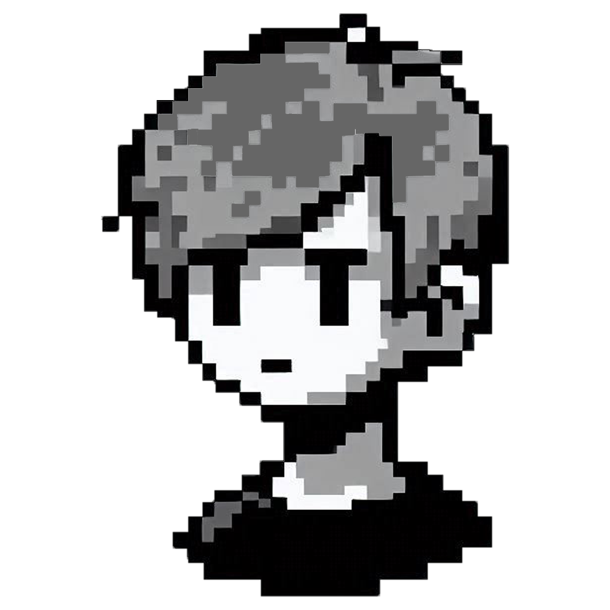
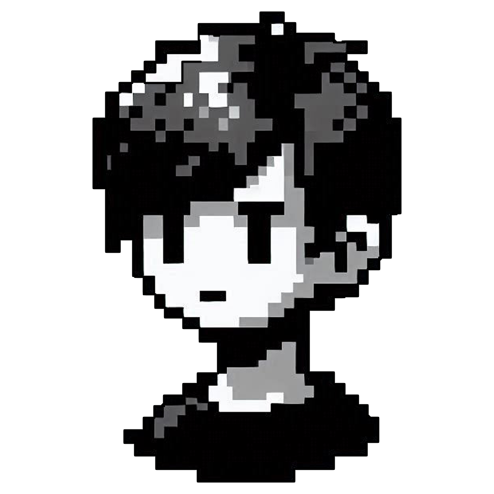

Projeto CO-OP dos guri!


O projeto visa expor conhecimento, ideias, práticas e aprendizados de programação em um repositório cooperativo onde os dois guris publicam e editam mas sobretudo trocam uma idéia sobre o que foi implementado e aprendido.